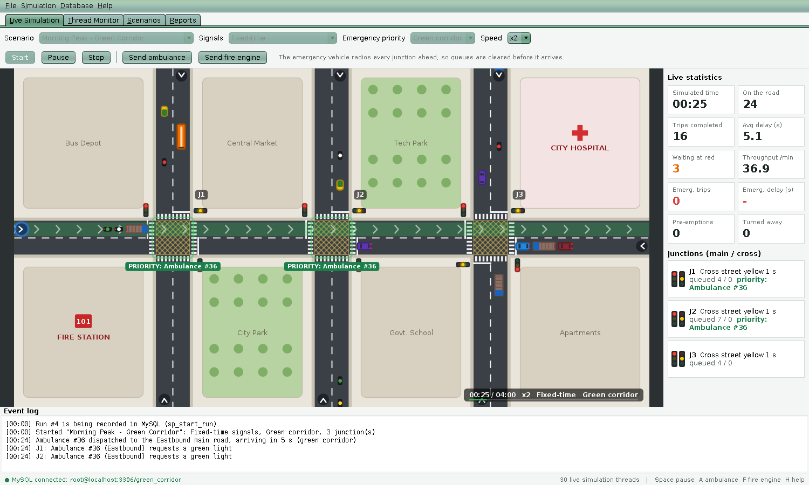
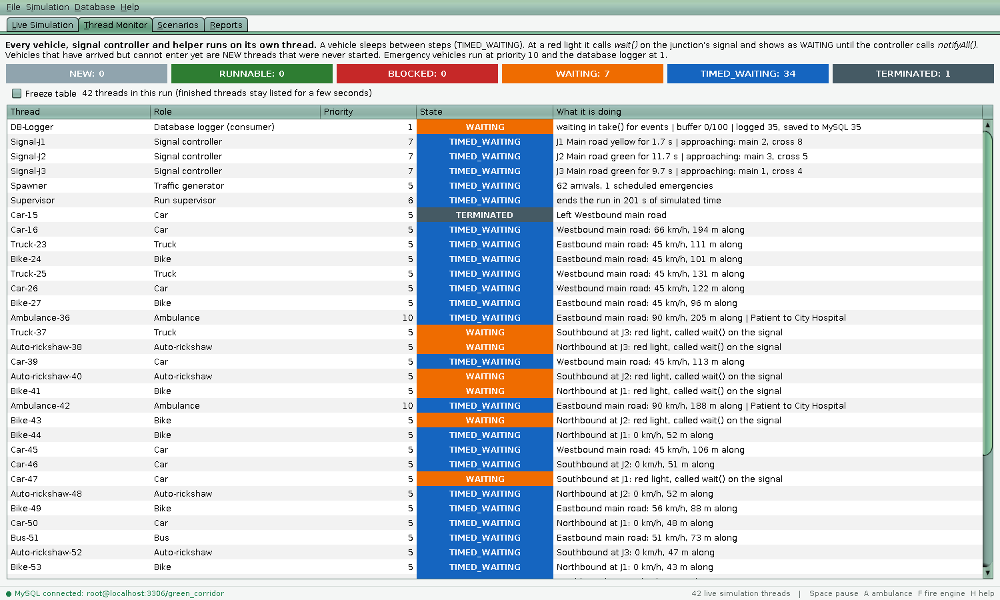
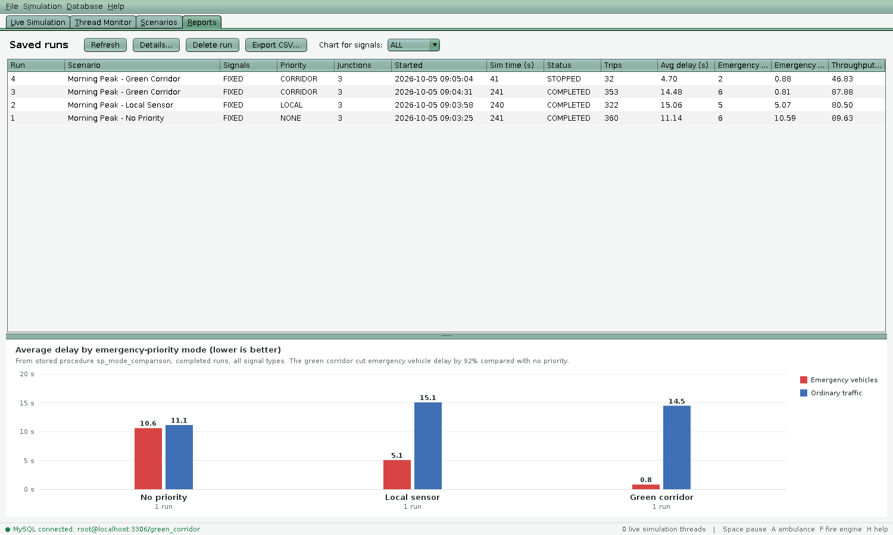

The problem we picked
A siren does not turn a red light green. An ambulance that reaches a junction still waits for the signal, and behind a queue it waits even longer. In a busy city a handful of those waits add up to minutes, and for a patient or a fire those minutes matter. Some cities handle the worst cases by hand. For an organ transport, police stand at every junction on the route and open it just before the vehicle arrives. The idea has a name, a green corridor, and it works because the junctions are warned early enough to finish changing their lights.
Our project asks a plain question. If every signal on the route knew an ambulance was coming, how much time would it save, and what would that cost everybody else? You cannot answer that on a real road, so we built a road in software and ran the experiment on it.
Three ways to treat an ambulance
The simulator runs the same traffic under three rules and measures the difference.
| Mode | Who knows, and when | What the junction does |
|---|---|---|
| No priority | Nobody. The ambulance is just another vehicle. | Keeps its normal cycle. The ambulance queues at red like everyone else. |
| Local sensor | A detector 110 px (about 18 m) before each stop line sees the ambulance. | Starts changing its lights only when the ambulance is already almost there. |
| Green corridor | Every junction on the route is told when the ambulance is dispatched, about 5 s before it reaches the map. | Finishes the light change early, so the queue has cleared and the light is green on arrival. |
Words used in this page
| Term | Meaning here |
|---|---|
| Junction | A crossing of the main road (east-west) with a cross street (north-south). A map has one to three. |
| Phase | One step of a signal's cycle, such as "main road green" or "all red". |
| Pre-emption | A signal interrupting its normal cycle to serve an emergency vehicle. |
| Delay | The extra time a vehicle needed compared with driving the same road empty with no lights. |
| Stop line | The painted line where vehicles must stop for a red light, 16 px before the junction box. |
| Junction box | The square where the two roads overlap. Two crossing vehicles must never be inside it together. |
| Throughput | Vehicles that finished crossing the map per simulated minute. |
| Thread | One independent line of execution inside the Java program. Here, one per vehicle and one per signal. |
What the app does
The program is one window with four tabs. You pick a scenario, press Start, and watch roughly a minute of city traffic run in real time while numbers update beside it.

- Live Simulation. The animated map. Start, pause, stop and change the speed from x1 to x8. Send ambulances and fire engines by button, key or by clicking a road entry. Hover any vehicle to see its thread. Click a junction to switch its light by hand, as traffic police would.
- Thread Monitor. A table of every thread in the run with its life-cycle state, priority and current activity.
- Scenarios. Create, edit, copy and delete traffic situations stored in MySQL. Export one to a file and import it on another computer.
- Reports. Every saved run, details per vehicle type, a CSV export and a chart comparing the three priority modes.


| Key | Action | Key | Action |
|---|---|---|---|
| Enter / F5 | Start the selected scenario | A / F8 | Ambulance to the hospital |
| Space / F6 | Pause or resume | F / F9 | Fire engine on a cross street |
| Esc / F7 | Stop the run | 1 2 3 4 | Speed x1, x2, x4, x8 |
| H | Help over the map | F1 | List of controls |
- Pick Morning Peak - No Priority and press Start. Press A and watch the ambulance queue at red lights.
- Stop, pick Morning Peak - Green Corridor and repeat. A green band appears ahead of the ambulance, the junctions show PRIORITY, and cars pull over.
- Hover the ambulance. The tooltip shows its thread name, its state and priority 10.
The big picture
Five ideas shape the whole program. Once you hold them, every class has an obvious place.
- One object for every real thing. A
Vehicle, aLane, aJunctionand aSignalControllereach mirror something on a real road. - One thread for every active thing. Vehicles and signals decide for themselves, so each runs its own loop.
- Shared data is guarded. Lanes, junction boxes and counters are touched by many threads, so access goes through
synchronizedmethods. - The screen only reads. The Swing code takes snapshots on timers and never decides anything about traffic.
- The database never slows the traffic. Threads drop events into a buffer, and one background thread writes them to MySQL.
Where the code lives
Everything is under app/src/main/java/com/greencorridor/. Each folder is a Java package with one job.
| Package | Contains | Lines |
|---|---|---|
| ui | The window, the map canvas, the four tabs, dialogs, colours and fonts | 3,275 |
| engine | The simulation: engine, signal controllers, spawner, clock, event buffer, statistics, database logger | 1,595 |
| vehicle | The vehicle class tree, the factory and the interfaces they implement | 974 |
| model | Plain data: scenario, trip record, enums, run summary | 847 |
| db | JDBC code: connection, repositories, DAO, script installer | 828 |
| road | Lane, stop line, junction and the road network | 606 |
| io | Scenario files, CSV export, run log files | 185 |
| exception | Six custom exceptions | 89 |
| Main.java | Starts Swing | 38 |
Who talks to whom
This is the thread map of a running simulation. Boxes in the top two rows are threads. Boxes in the third row are shared objects that threads compete for. The bottom row is the path from the simulation to the database.
| Thread | How many | Created with | Priority | Job |
|---|---|---|---|---|
| Swing event thread | 1 | Swing itself | - | Draw the map, handle clicks and keys, refresh tables |
| Vehicle threads | 30 to 80 | Vehicle implements Runnable | 5 (emergency 10) | Move one vehicle, one small step at a time |
| Signal-J1 to J3 | 1 to 3 | SignalController implements Runnable | 7 | Run the light cycle and serve emergency requests |
| Spawner | 1 | extends Thread | 5 | Random arrivals, start threads of vehicles that fit on the road |
| Supervisor | 1 | Inner class, extends Thread | 6 | End the run when the scenario's time is up |
| DB-Logger | 1 | extends Thread | 1 | Take events from the buffer and save them |
| RunFinisher | 1, short-lived | Anonymous Runnable | 5 | Shut a run down without freezing the window |
| DB-Connect, DB-Test, DB-Install | short-lived | Lambda Runnable | 5 | Network work kept off the Swing thread |
The life of one run, in order
- You press Start.
LiveSimulationPanel.startRun()builds aSimulationEnginefrom the chosen scenario, signal mode and priority mode. - The engine's constructor validates the scenario, copies it, parses the vehicle mix, builds the
RoadNetworkand creates oneSignalControllerper junction. engine.start()calls the stored proceduresp_start_runto get a run number, then starts the logger, the signal threads, the spawner and the supervisor.- The spawner creates vehicles at random. Each vehicle waits in its lane's entry queue as a thread that has not started. When there is room, the spawner starts it.
- Every vehicle thread loops: wait if paused, take a step, sleep 30 ms. Each signal thread loops the same way.
- Finished vehicles report a
TripRecord. The statistics collector counts it and the event buffer carries it to the database logger. - Time runs out (the supervisor calls
stop(true)) or you press Stop (stop(false)). ARunFinisherthread interrupts everything, waits for the threads to end, flushes the buffer and callssp_finish_run. - A summary comes back to the Swing thread and the results dialog opens.
Roads and junctions
A traffic simulation looks two-dimensional, but the code treats every lane as a one-dimensional line. That one decision removes most of the geometry from the logic.
One number for every position
Each Lane has a start point and a direction. A vehicle's place is described by a single number s, the distance in pixels from the lane's start. The vehicle stores frontS, and its back is simply rearS = frontS - length. When the screen needs real coordinates, the lane converts: x = startX + dx * s and y = startY + dy * s, where (dx, dy) is the direction's unit vector. Checking whether two vehicles overlap becomes comparing two numbers.
The numbers are real. For the first junction on the eastbound lane, the lane starts 60 px outside the map, so the junction centre at world x = 300 is at s = 360. The box spans 32 px either side (s = 328 to 392), and the stop line sits STOP_MARGIN = 16 px before the box at s = 312. The unit test LaneTest.networkGeometry checks these values.
The map
The world is 1200 by 640 pixels, and 6 px equal one metre, so the map is a 200 m stretch of road. The main road runs east-west at y = 320 and is 64 px wide. With n junctions, junction i is at x = 1200 * (i + 1) / (n + 1), which gives 300, 600 and 900 for three. Traffic keeps left, as on Indian roads: eastbound vehicles use the northern half of the road and southbound vehicles use the eastern half. Each road has one lane per direction, so three junctions give 2 + 2 * 3 = 8 lanes.
A lane remembers its stop lines in order. The main road's lanes cross every junction and so have one stop line per junction. A cross street's lane crosses only its own junction and has one.
What a lane keeps
vehicles, aLinkedListof the vehicles on the road, front-most first. The vehicle ahead of you is the previous element. A linked list suits this because vehicles leave from anywhere in the list and join at the end.entryQueue, a secondLinkedListof vehicles that have arrived but cannot enter yet because the start of the lane is busy. Their threads exist but have not been started. If this queue reaches 12 vehicles, new arrivals are turned away and counted. Emergency vehicles are added withaddFirst, so they jump the queue and are never turned away.
Both lists are touched by several threads, so every method that reads or changes them is synchronized on the lane. Chapter 8 explains why that is enough.
The junction box
The box is the one place where a collision can happen: a car crossing east-west while another crosses north-south. The junction keeps a count of vehicles inside, one slot per axis, and one method both checks and updates it. Because the whole method is synchronized, two threads can never both see "empty" and both walk in.
public synchronized boolean tryEnterBox(Axis axis) {
if (boxOccupancy[axis.other().ordinal()] > 0) {
return false; // crossing traffic is still inside
}
boxOccupancy[axis.ordinal()]++; // same direction may share the box
return true;
}
public synchronized void exitBox(Axis axis) {
if (boxOccupancy[axis.ordinal()] > 0) {
boxOccupancy[axis.ordinal()]--;
}
}The signal normally keeps the two roads apart anyway. The box check is a second safety net that holds even if the signal logic had a bug, and the safety checker in Chapter 14 confirms it never fired.
A vehicle's life
Every vehicle on screen is an object of a class in the vehicle package, and every one of them runs its own thread. Reading Vehicle.java is the fastest way to understand the whole project, so this chapter goes through it slowly.
The class tree
Vehicle abstract, implements Runnable, Drawable, Monitorable
|-- Car, Bike, AutoRickshaw, Bus, Truck
`-- EmergencyVehicle abstract, implements EmergencyResponder
|-- Ambulance final
`-- FireEngine final
interface EmergencyResponder extends Prioritized, DrawableVehicle holds everything the vehicles share: the movement loop, braking, junction rules and drawing. A subclass supplies only what makes it different, through the constructor and a few small methods.
public class Car extends Vehicle {
public Car() {
super(26, 13, 110, 75); // length, width, top speed, acceleration
this.color = PALETTE[number % PALETTE.length];
}
@Override public String getTypeCode() { return "CAR"; }
@Override public String getDisplayName() { return "Car"; }
@Override
protected void drawBody(Graphics2D g, long animMillis) {
fillBody(g, color, 7); // each subclass paints itself
// ... windscreen and rear window
}
}| Type | Length x width | Top speed | Acceleration | Notes |
|---|---|---|---|---|
| Car | 26 x 13 px (4.3 m) | 66 km/h | 75 px/s² | The default, 45% of the mix |
| Bike | 14 x 6 px (2.3 m) | 69 km/h | 95 px/s² | Small and quick to accelerate |
| Auto-rickshaw | 19 x 12 px (3.2 m) | 51 km/h | 65 px/s² | Yellow body, green canopy |
| Bus | 46 x 15 px (7.7 m) | 51 km/h | 40 px/s² | Long, slow to pick up speed |
| Truck | 40 x 15 px (6.7 m) | 45 km/h | 35 px/s² | Slowest of all |
| Ambulance | 30 x 14 px (5.0 m) | 90 km/h | 110 px/s² | Thread priority 10, urgency 3 |
| Fire engine | 40 x 15 px (6.7 m) | 81 km/h | 85 px/s² | Thread priority 10, urgency 2 |
Speeds are stored in pixels per second. Dividing by 6 gives metres per second, and multiplying by 3.6 gives km/h, so the factor is 0.6. The tooltip and Thread Monitor use that conversion.
From arrival to exit
- Created. The spawner picks a type with
VehicleFactory.randomFromMix, which walks the cumulative weights of the scenario's vehicle mix. The vehicle gets aThreadobject, but the thread is not started. In Java terms the thread is in the NEW state. - Queued. It goes into the entry queue of its lane. If the queue already holds 12, it is turned away.
- Admitted. Each tick the spawner asks every lane
admitNext(). If the last vehicle on the road has cleared the first 8 px, the front of the queue is placed on the lane at 80% of its top speed and the spawner callsstart()on its thread. - Running. The thread executes
run()until the vehicle is off the far end. - Done. The
finallyblock removes the vehicle from the lane and the junction box. ATripRecordgoes to the statistics and the event buffer. The thread ends (TERMINATED).
The thread's main loop
@Override
public final void run() {
SimClock clock = engine.getClock();
lastUpdateMs = clock.now();
entrySimMs = lastUpdateMs;
long exitMs = -1;
try {
while (engine.isRunning()) {
clock.awaitIfPaused(); // parks here while the run is paused
long now = clock.now();
if (step(now)) { // true when the vehicle left the map
exitMs = now;
break;
}
Thread.sleep(SimConfig.TICK_MS); // TIMED_WAITING until the next tick (30 ms)
}
} catch (InterruptedException e) {
// The engine interrupts every vehicle when the run stops: just end the thread.
} finally {
long now = clock.now();
leaveBox(now);
lane.leave(this);
exited = true;
onRemoved(now);
engine.getRegistry().markTerminated(Thread.currentThread());
}
if (exitMs >= 0) {
engine.vehicleFinished(this, buildTrip(exitMs));
}
}Three details matter. The method is final so no subclass can replace the loop and break the safety rules. The InterruptedException is how the engine stops a thread that is asleep or waiting, and it is treated as a normal exit. The finally block runs however the thread ends, so a vehicle can never leave a ghost in a lane or a stuck count in a junction box.
One step, in eight moves
The private method step(now) moves the vehicle by one small slice of time. It never moves further than the situation allows.
1 · Work out the time slice
dt = min(elapsed, 250 ms). The cap means a thread that was starved of CPU for a moment does not teleport forward when it wakes. It is also the reason x8 is the top speed, which Chapter 9 explains.
2 · Find how far the road allows
// First limit: the vehicle ahead.
Vehicle leader = lane.leaderOf(this);
double allowed = leader == null ? Double.MAX_VALUE
: leader.getRearS() - frontS - SimConfig.MIN_GAP; // keep a 7 px gap
// Second limit: the next stop line, if the signal (or a full exit) says stop.
StopLine next = lane.nextStopLine(frontS);
if (next != null && next == boxStop) {
next = null; // already inside that junction: committed
}
boolean held = false;
if (next != null) {
double dist = next.getStopS() - frontS;
if (dist < allowed && !mayCross(next, dist, leader)) {
allowed = dist; // stop at the line
held = true;
}
}allowed is the free distance ahead. It starts as the gap to the leader. If the next stop line is closer and the vehicle may not cross it, allowed shrinks to the distance to that line.
3 · May it cross the stop line?
private boolean mayCross(StopLine next, double dist, Vehicle leader) {
if (!next.getJunction().getSignal().mayEnter(next.getAxis(), dist, speed)) {
return false; // the light says no
}
// "Don't block the box": enter only if there is room for us behind the queue
// on the far side, otherwise we would get stuck in the middle of the crossing.
if (lane.roomBeyond(next, this) < length + SimConfig.MIN_GAP) {
return false;
}
return leader == null
|| leader.getSpeed() >= SimConfig.CRAWL_SPEED
|| leader.getRearS() - next.getBoxExitS() >= length + SimConfig.MIN_GAP;
}- Green: go. Red: stop. Yellow: keep going only if the vehicle is moving and so close that it could not stop in time, defined as being within
0.6 sof the line at its current speed. - Don't block the box. This is the rule real drivers follow at a yellow-hatched junction. A vehicle enters only when there is space for it on the far side. Without it, queues spill into the junction and block the cross street, and the whole map locks up.
Lane.roomBeyondmeasures the space between the junction's far edge and the next stop line, minus the length of every vehicle already there. If traffic beyond is still flowing and the next light is green, the answer is "unlimited".
4 · Choose a speed
double v = Math.min(maxSpeed, speed + acceleration * dt); // speed up gently
// Brake smoothly so we can stop within the allowed distance.
return Math.min(v, Math.sqrt(2 * SimConfig.BRAKE_DECEL * allowed));The second line is school physics. A vehicle slowing at deceleration a over distance d needs v² = 2ad, so the fastest it may be going with d left is sqrt(2ad). With a = 170 px/s², a car at its top speed of 110 px/s starts slowing when the free distance drops below about 36 px (6 m). Because the limit is recalculated every tick, the car glides to a stop exactly at the line or exactly behind the car in front.
A vehicle that is standing waits REACTION_MS = 450 ms after the way clears before it moves, like a real driver.
170 px/s² is about 28 m/s², far harder than a real car can brake. The constants are tuned to make the animation clear and the queues behave sensibly. They are not engineering values, and the report should say so.
5 · Enter the junction box
If this step would carry the front of the vehicle past the stop line, it calls tryEnterBox from Chapter 4. If that returns false, the vehicle is pushed back to the line and counts as held.
6 · Move and record
frontS += move and speed = move / dt. A stop is counted once when speed falls below 3 px/s, and it can be counted again only after the vehicle has picked up speed above 9 px/s.
7 · Leave the box
When rearS passes the box's far edge, exitBox is called. For an emergency vehicle this also triggers onLeaveJunction, which gives the junction back (Chapter 7).
8 · Sleep on the signal
if (held && speed < SimConfig.STOPPED_SPEED && next.getStopS() - frontS < 1.0) {
SignalController signal = next.getJunction().getSignal();
if (!signal.isGreen(next.getAxis()) && !yielding) {
waitingAtSignal = true;
waitingOn = signal;
try {
signal.awaitGreen(next.getAxis(), this); // wait() inside
} finally {
waitingAtSignal = false;
waitingOn = null;
}
startAt = engine.getClock().now() + SimConfig.REACTION_MS;
}
}A vehicle that has stopped at a red light has nothing to do until the light changes, so it should not keep waking every 30 ms. It calls awaitGreen, which calls Java's wait(). The thread is now in the WAITING state, using no CPU, until the controller calls notifyAll(). Chapter 8 shows both halves.
Pulling over for a siren
Ordinary vehicles make room for emergency vehicles. Every step, an ordinary vehicle asks its lane mustGiveWay. If an emergency vehicle is within 110 px behind it, it shifts 10 px toward the left edge at 45 px/s (lateral) and brakes to a stop. The emergency vehicle then drives past in the space that opened up.
Making that work needed five small changes in the lane code.
- An emergency vehicle's
leaderOfskips vehicles that are pulled over, so it does not queue behind them. - Ordinary vehicles follow whichever of the passing pair has its rear bumper nearest, so nobody drives into the ambulance.
- After it passes one,
overtakeYieldingswaps the two in the lane's list so the list stays in road order. roomBeyondignores pulled-over vehicles when an emergency vehicle asks.- A vehicle that is asleep in
wait()at a red light must also be able to hear the siren. Emergency vehicles callwakeWaitingVehicles()on the signal ahead, andawaitGreenreturns early whenmustGiveWay()becomes true.
Measuring a trip
long startMs = arrivalSimMs >= 0 ? arrivalSimMs : entrySimMs;
double idealMs = (lane.getLength() + length - startS) / maxSpeed * 1000.0;
double delaySec = Math.max(0, (exitMs - startMs - idealMs) / 1000.0);
long queuedMs = entrySimMs - startMs; // time spent waiting off the mapDelay is the actual trip time minus the ideal one, which is the lane length divided by the vehicle's top speed. The clock starts when the vehicle arrives at the edge of the map, not when it gets onto the road, so a long entry queue counts against the junction that caused it.
Traffic signals
Each junction has a SignalController, a class that implements Runnable and runs on its own thread named Signal-J1, Signal-J2 and so on. It is the second most important class after Vehicle.
Six phases in a loop
Two roads can never both be green. The cycle is a six-step loop kept in the enum Phase. Each constant knows its axis and its light, and next() moves to the following constant, wrapping at the end.
public enum Phase {
EW_GREEN(Axis.EW, SignalLight.GREEN),
EW_YELLOW(Axis.EW, SignalLight.YELLOW),
EW_CLEARANCE(Axis.EW, SignalLight.RED), // all red
NS_GREEN(Axis.NS, SignalLight.GREEN),
NS_YELLOW(Axis.NS, SignalLight.YELLOW),
NS_CLEARANCE(Axis.NS, SignalLight.RED); // all red
public SignalLight lightFor(Axis a) {
return a == axis ? light : SignalLight.RED; // the other road always sees red
}
public Phase next() {
Phase[] all = values();
return all[(ordinal() + 1) % all.length];
}
}The two "clearance" phases are the all-red pause. They give the last vehicles two seconds to get out of the box before the other road is released. With the default scenario settings the cycle looks like this.
Fixed-time and adaptive control
The scenario chooses how a green phase ends.
- Fixed-time. The green lasts exactly its configured time, 12 s for the main road and 8 s for the cross street by default. Simple and predictable.
- Adaptive (vehicle-actuated). The controller looks at detectors, which here means counting vehicles within 170 px in front of each stop line, and decides whether to keep or end the green.
private boolean greenIsOver(Axis axis, long elapsed, int here, int there) {
long green = greenTimeOf(axis);
if (mode == SignalMode.FIXED) {
return elapsed >= green;
}
// ADAPTIVE (vehicle-actuated control)
if (elapsed < SimConfig.MIN_GREEN_MS) {
return false; // every green lasts a minimum time (4 s)
}
if (there == 0) {
return false; // nobody waiting on the other road: stay green
}
if (here == 0) {
return true; // our road is empty: "gap out" and switch
}
return elapsed >= 2 * green; // "max out" at twice the base green
}The two special cases come from real traffic engineering. "Gap out" ends a green when the road has gone quiet. "Max out" stops a busy road from holding the junction forever when the other road has a queue. At night, with few vehicles, an adaptive junction simply rests on green for the main road until someone arrives on the cross street.
The controller's loop
while (engine.isRunning()) {
clock.awaitIfPaused();
// Count vehicles before taking our own lock: the lanes have locks of their own.
int ew = junction.demand(Axis.EW, SimConfig.DEMAND_RANGE);
int ns = junction.demand(Axis.NS, SimConfig.DEMAND_RANGE);
tick(clock.now(), ew, ns); // synchronized: decide and maybe change phase
synchronized (this) {
wait(SimConfig.TICK_MS); // a pre-emption request wakes us early
}
}The controller uses wait(30) rather than Thread.sleep(30). Both pause for 30 ms, but wait can be cut short. When an ambulance asks for a green light, requestPreemption calls notifyAll() and the controller reacts at once instead of up to 30 ms later. The vehicle counts are taken outside the controller's lock so that the controller never holds its own lock while asking a lane for its lock, which would invite a deadlock.
Every phase change goes through setPhase, and that method ends with notifyAll(). This is the signal that wakes every vehicle sleeping at a red light.
// Vehicle side: sleep until the light is green (or a siren arrives behind us).
public synchronized void awaitGreen(Axis axis, Vehicle waiter) throws InterruptedException {
while (!phase.isGreenFor(axis) && !waiter.mustGiveWay()) {
wait();
}
}
// Controller side: wake everybody whenever the phase changes.
private void setPhase(Phase next, long now) {
phase = next;
phaseStart = now;
// ... fairness bookkeeping (Chapter 7)
notifyAll();
}The test is in a while loop, never an if. A woken thread must re-check its condition, because notifyAll wakes every waiter, including those whose road is still red.
Try it yourself
Below is a small JavaScript copy of the controller's phase logic, using the same default timings and the same pre-emption rules as SignalController.java. It is only here to explain the idea. The real controller is the Java class. Press the buttons and watch how the lights change safely.
Things to try. Press the ambulance button while the cross street is green and watch the order: yellow, all red, then green for the ambulance. Press both emergency buttons and notice that the ambulance is served first, because its urgency is 3 and the fire engine's is 2. Press "First vehicle passes" and see the short recovery green before the cross street gets its turn. Then press the ambulance button twice in quick succession and see the fairness rule from Chapter 7 protect the cross street.
Emergency vehicles and the three modes
EmergencyVehicle extends Vehicle and adds three behaviours. It runs at thread priority 10. It asks signals for a green light. And it releases the junction when it has passed. Ambulance and fire engine are final subclasses that differ only in size, speed, urgency and looks.
How a vehicle asks a signal
@Override
protected void beforeStep(long now) {
// ... wake ordinary vehicles ahead so they can pull over, then overtake them
PriorityMode mode = engine.getPriorityMode();
if (mode == PriorityMode.NONE) {
return; // no priority: behave like everyone else
}
double range = mode == PriorityMode.LOCAL
? SimConfig.LOCAL_DETECT_RANGE // 110 px: a roadside sensor
: SimConfig.CORRIDOR_DETECT_RANGE; // 800 px: a radio call
for (StopLine sl : lane.getStopLines()) {
double dist = sl.getStopS() - getFrontS();
if (dist >= -1 && dist <= range && requested.add(sl)) { // ask each junction once
sl.getJunction().getSignal().requestPreemption(this, sl.getAxis(), now);
}
}
}requested is a HashSet of the stop lines already called. Set.add returns false if the element was present, so one line is both the duplicate check and the insertion.
Why the green corridor wins: warning time
A signal that is green for the wrong road needs 3 s of yellow plus 2 s of all red, five seconds in total, before it can show green to the ambulance. Whether the ambulance has to wait comes down to one question: how much warning did the junction get?
These figures come straight from the constants for an ambulance driving unobstructed at 150 px/s. The sensor sits 110 px before the stop line, which is 110 / 150 = 0.7 s of warning. Far too little, so the ambulance often arrives while the light is still changing and has to stop. In corridor mode the junctions are called when the ambulance is dispatched, and the vehicle spends 5 s approaching the map first (APPROACH_MS). Junction 1 at s = 312 gets 5 + 312/150 = 7.1 s, and junction 2 gets 9.1 s. Junction 3 is more than 800 px away, so it is called as soon as the ambulance is within 800 px, which is 800 / 150 = 5.3 s ahead. Every junction gets at least the five seconds it needs.
What a junction does with the request
When requestPreemption is called, the request joins a LinkedList kept in order of urgency. A ListIterator finds the first request with a lower urgency and inserts the new one before it. Medical emergencies (urgency 3) are served before fire calls (urgency 2), and equal urgencies are served first come, first served.
Request r = new Request(vehicle, axis, now);
ListIterator<Request> it = requests.listIterator();
while (it.hasNext()) {
if (it.next().urgency < r.urgency) {
it.previous(); // step back to just before the less urgent one
break;
}
}
it.add(r);
notifyAll(); // wake the controller thread at onceAs long as the list is not empty, the controller stops following its normal cycle and runs preemptionTick for the first request:
- If the light is already green for the ambulance's road, hold it. The first time this is true, record the moment, so the response time can be measured.
- If the other road is green, end that green by going to yellow, unless that road is protected (see fairness below).
- On yellow, wait out the yellow time. Then the all-red pause.
- When the all-red time is over, turn green for the ambulance's road.
When the ambulance leaves the box, releasePreemption removes the request and builds a PreemptionEvent with three timestamps: requested, green and cleared. That event goes to the statistics and the database. If no other request is waiting, the controller sets a short recovery so the green it held ends 3 s later, and the normal cycle takes over again.
Fairness: stopping back-to-back emergencies from starving a road
Testing showed that two ambulances close together could keep the cross street red for 40 seconds or more. The fix is a small piece of bookkeeping in setPhase.
private void setPhase(Phase next, long now) {
phase = next;
phaseStart = now;
if (next.getLight() == SignalLight.GREEN && starved[next.getAxis().ordinal()]) {
starved[next.getAxis().ordinal()] = false;
protectedUntil = now + SimConfig.MIN_GREEN_MS; // owed at least 4 s of green
}
notifyAll();
}Whenever pre-emption forces a road to stay red, starved is set for it. When that road finally gets a green, it is protected for 4 s: preemptionTick will not cut that green short before protectedUntil. The unit test starvedRoadGetsItsMinimumGreen checks it with made-up times and no threads at all.
How emergencies are created
- By hand. The buttons, the A and F keys, F8 and F9, or a click on a road entry arrow (Shift for a fire engine) call
engine.dispatchEmergency. - By schedule. If the scenario sets "emergency every N seconds", the spawner dispatches one at random intervals between 0.5 and 1.5 times N, so the average is N but the pattern is not clockwork. Two out of three are ambulances heading east to the hospital. Every third is a fire engine entering a cross street at a random junction.
Dispatching does not put the vehicle on the road at once. The engine creates it, registers its (not yet started) thread, tells the junctions if the mode is corridor, and hands it to the spawner's approaching list. After 5 s the spawner moves it to the front of its lane's entry queue. During those 5 s the map shows a flashing circle at the road entry, and in corridor mode the green band is already drawn along the route.
The end of a real log from a green-corridor run shows the result. A message such as "green after 0.0 s" means the light was already green when the request arrived.
[00:31] J3: green for Ambulance #36 after 0.0 s
[00:32] J3: Ambulance #42 (Eastbound) requests a green light
[00:32] J3: green for Ambulance #42 after 0.0 s
[00:39] Ambulance #36 crossed the map in 10.3 s (delay 1.3 s, 1 stop)
[00:40] Ambulance #42 crossed the map in 9.4 s (delay 0.4 s, 0 stops)
[00:40] Run stopped after 41 simulated secondsMaking threads cooperate
With 40 or more threads reading and changing the same lanes, junctions and counters, the program has to answer three questions. What is shared? How is it protected? And how do threads wait for each other without wasting CPU? This chapter is the one to read most carefully before a viva, because it is the heart of Unit II.
What is shared, and what guards it
| Shared data | Touched by | Protection |
|---|---|---|
Lane lists (vehicles, entryQueue) | every vehicle on the lane, the spawner, signal detectors, the Swing thread | All methods synchronized on the lane. The Swing thread gets a copy from snapshot(). |
| Junction box counts | vehicles of both axes | synchronized tryEnterBox and exitBox |
| Signal controller state (requests, fairness flags) | its own thread, emergency vehicles, Swing | Methods synchronized on the controller. The current phase is volatile so it can be read without a lock. |
StatsCollector | vehicles write, Swing and the engine read | synchronized. snapshot() computes every figure under one lock. |
ThreadRegistry | engine, vehicles on exit, Swing | synchronized |
EventBuffer | vehicles put, the logger takes | synchronized with wait and notifyAll |
SimClock | every thread | synchronized |
frontS, speed of a vehicle | written by its own thread, read by others | volatile |
volatile or synchronized?
synchronized gives mutual exclusion and visibility: only one thread at a time runs the guarded code, and its changes are visible to the next thread that takes the lock. volatile gives visibility only: a write by one thread is seen at once by readers, but nothing stops two threads from interleaving read-modify-write steps. A vehicle's frontS is written by exactly one thread, its own, so frontS += move is safe even though it is not atomic. Everyone else only reads it, and volatile makes sure they see fresh values.
Three places where threads wait for each other
Java's wait() and notifyAll() let a thread sleep until another thread says the situation changed. The project uses them in three places.
1 · The producer-consumer buffer
Vehicles produce events (finished trips and pre-emptions). One logger thread consumes them. The buffer between them is bounded at 100, which gives the classic problem: producers must wait when it is full, and the consumer must wait when it is empty.
public synchronized void put(T item) throws InterruptedException {
while (items.size() == capacity) {
wait(); // producer waits for the consumer to make room
}
items.addLast(item);
notifyAll(); // a consumer may be waiting for data
}
public synchronized T take() throws InterruptedException {
while (items.isEmpty()) {
wait(); // consumer waits for a producer
}
T item = items.removeFirst();
notifyAll(); // a producer may be waiting for room
return item;
}The vehicles never touch the database. Without the buffer, every vehicle that finished would have waited a few milliseconds for MySQL, and the animation would stutter. With it, the slowest thing in the system runs on its own thread at the lowest priority.
2 · Vehicles and the red light
This is awaitGreen and setPhase from Chapter 6. A vehicle waits on the signal's monitor, and every phase change wakes all of them.
3 · The pause gate
Every thread calls clock.awaitIfPaused() at the top of its loop. While the run is paused it blocks in wait(). Resuming calls notifyAll() and all of them continue. One flag freezes the entire world.
public synchronized void awaitIfPaused() throws InterruptedException {
while (paused) {
wait();
}
}
public synchronized void setPaused(boolean pause) {
if (pause == paused) return;
rebase();
paused = pause;
if (!paused) {
notifyAll(); // wake every parked thread
}
}Each wait() above sits inside a while that re-tests the condition. A thread can be woken because some condition changed, not necessarily its own, and Java also allows spurious wake-ups. Using if instead is one of the most common concurrency bugs, and the question is likely in a viva.
The life cycle of a thread, in this project
The Thread Monitor tab is this diagram, live. It reads Thread.getState() for every thread twice a second, which is why a queued car shows as NEW, a moving one as TIMED_WAITING, and one at a red light as WAITING.
Thread priorities
Emergency vehicles run at MAX_PRIORITY (10). Signal controllers run at 7, because one slow controller delays dozens of vehicles. The spawner and ordinary vehicles use the default 5, the supervisor 6, and the database logger MIN_PRIORITY (1), because nothing on screen depends on it. Priorities are only a hint to the operating system scheduler, so the program never relies on them for correctness. Correctness comes from the locks. Priority only makes the important threads a little more likely to get CPU first.
Avoiding deadlock
A deadlock needs a circle of threads each holding a lock the next one wants. We broke the circle by fixing the order in which locks are ever nested.
- The only nested locking in the program is signal lock, then lane lock. It happens in
awaitGreen, which holds the signal's monitor and callswaiter.mustGiveWay(), which locks the lane. - Nothing ever takes a signal lock while holding a lane lock. Lane methods that need to know a light's colour call
isGreen(), which reads thevolatilephase and takes no lock. - The controller counts vehicles before entering its own synchronized
tick(), so it never holds its lock while asking a lane for its lock. releasePreemptionhands its event to the buffer after leaving its synchronized block, becauseput()may block if the buffer is full and it must not do that while holding the controller's lock.
Four bugs the tests found
Concurrent code looks right until it runs a few thousand times. We wrote a SafetyChecker thread that watches a running simulation every 20 ms (Chapter 14), and it found four real problems. They make good stories for the report.
Symptom. Two vehicles drew on top of each other when an ambulance passed a pulled-over bus. Cause. While the ambulance is alongside, it and the bus are side by side, so the order of the lane's list no longer matched the order on the road, and the car behind followed the wrong one. Fix. leaderOf now follows whichever of the passing pair has its rear bumper nearest, and overtakeYielding swaps their places once the ambulance is ahead.
Symptom. The stall detector reported that the front car of a lane had not moved for 40 seconds and that no vehicle had finished a trip for 25 seconds. Cause. A queue from the next junction reached back into this junction's box. Vehicles sitting in the box could not leave, and the crossing road, whose cars wait for an empty box, could not enter even on green, so the jam spread. Fix. The "don't block the box" rule, Lane.roomBeyond, from Chapter 5. A vehicle enters only if it fits on the far side.
Symptom. An ambulance stood still for good behind a line of vehicles. Cause. The bus at the front had pulled over and stopped for the siren. The auto-rickshaw behind it could not pull over, because it was inside a junction box where stopping is not allowed, so it drove on and then got blocked by the stopped bus. The ambulance was blocked by the rickshaw, and the bus would not move until the ambulance had passed. That is a circle. Fix. A vehicle pulls over only if every vehicle between it and the siren has done so too (Lane.mustGiveWay), so a vehicle that cannot move aside no longer ends up stuck behind one that has stopped.
Symptom. With ambulances close together, a cross street stayed red for more than 40 seconds. Cause. Each pre-emption was fair on its own, but back to back they never gave the other road a turn. Fix. The minimum-green protection in Chapter 7.
While chasing Bug 1 we also had a false alarm worth remembering: the checker itself had a race. It read the leader's position, then the follower's, and in between the leader moved. Reading the follower first removes the false report, because the leader can only move forward.
Time and the life of a run
Simulated time
The simulation keeps its own clock, SimClock, so it can run faster than real time and stop completely when paused. Every other class asks the clock instead of calling System.currentTimeMillis().
public synchronized long now() {
if (paused) {
return baseSimMs; // time stands still
}
return baseSimMs + (System.nanoTime() - baseRealNanos) / 1000000L * speed;
}Whenever the speed or the pause state changes, rebase() stores the current simulated time and the current real time as a new starting point, so the formula never jumps.
Speed x8 means one real second is eight simulated seconds. A thread still ticks every 30 ms of real time, so at x8 each tick covers about 240 ms of simulated time. That is close to the MAX_STEP_MS = 250 cap on one step, and it is why x8 is the highest speed offered. Faster, and vehicles would move in jumps bigger than their own length.
Random arrivals
The spawner gives every lane a chance of an arrival on every tick. The probability is vehiclesPerMinute / 60 * dt. Over many ticks that produces random gaps between arrivals with the right average, the same pattern as real traffic. A Random seeded from the scenario's seed makes the arrival sequence repeatable, so the three priority modes in a benchmark face the same traffic.
Stopping a run safely
Stopping is harder than starting, because 40 threads are in the middle of different things. SimulationEngine.stop does this:
- Inside a
synchronizedblock, checkrunningand clear it. The first caller wins, so pressing Stop at the moment time runs out ends the run only once. - Release the pause gate, so that no thread stays parked there.
- Interrupt every registered thread except the logger. A thread asleep in
sleep()orwait()gets anInterruptedExceptionand falls into itsfinallyblock. - Start a short-lived
RunFinisherthread to do the slow part, so the Swing window never freezes. It joins each thread for up to 2 s, puts theENDmarker in the buffer, waits up to 15 s for the logger to drain it, builds theRunSummary, callssp_finish_runand notifies the UI.
The logger is deliberately not interrupted. It has to keep draining the buffer until it meets the END marker, otherwise the last trips of the run would be lost.
The supervisor is an inner class that extends Thread. Inside it, writing stop(true) did not call the engine's method. It resolved to the one inherited from Thread, and the compiler complained. The fix is to name the outer object: SimulationEngine.this.stop(true). The same lesson shows up in Unit I as the use of this to pick the right object.
Saving it all in MySQL
The schema
- All tables use InnoDB so that foreign keys and transactions work.
- Modes are
ENUMcolumns, so MySQL itself rejects a mode that does not exist.CHECKconstraints restrict the junction count to 1 to 3 and the duration to 30 to 1800 s.nameisUNIQUE. - Deleting a scenario sets
simulation_run.scenario_idtoNULL(ON DELETE SET NULL), because past results must survive. The run keeps a copy of the scenario's name and modes for that reason. Deleting a run removes its trips and pre-emptions (ON DELETE CASCADE). - The index on
(run_id, is_emergency)makes the per-run, per-kind aggregates fast.
Three stored procedures, three ways to call them
| Procedure | Parameters | What it does |
|---|---|---|
sp_start_run | 5 IN, 1 OUT (p_run_id) | Inserts the run row and returns its id through LAST_INSERT_ID() |
sp_finish_run | 3 IN, 3 OUT (trips, average delay, emergency delay) | Computes the run's figures from the stored trips and updates the run row |
sp_mode_comparison | 1 IN (signal filter) | Returns one row per priority mode with averages, for the chart |
try (Connection con = Database.getConnection();
CallableStatement cs = con.prepareCall("{call sp_start_run(?, ?, ?, ?, ?, ?)}")) {
cs.setInt(1, scenario.getId());
cs.setString(2, scenario.getName());
cs.setString(3, signalMode.name());
cs.setString(4, priorityMode.name());
cs.setInt(5, scenario.getJunctionCount());
cs.registerOutParameter(6, Types.INTEGER); // the new run id comes back here
cs.execute();
return cs.getInt(6);
}There is a useful cross-check in sp_finish_run. The simulation has already counted its own trips and delays in memory. The stored procedure counts them again from the rows that actually reached MySQL, and its numbers replace the in-memory ones in the summary. The results dialog says "Figures checked by the stored procedure sp_finish_run", and if any events had been lost on the way to the database, the counts would visibly differ.
Which JDBC statement is used where
| Type | Used for | Why |
|---|---|---|
Statement | listRuns(), findAll(), running the SQL script | No user-supplied values, so a plain statement is fine |
PreparedStatement | Scenario create, update, delete, find; run queries; the logger's batch inserts | Values go in as parameters, which prevents SQL injection, and a statement can be reused for a batch |
CallableStatement | The three stored procedures | The only statement type that reads OUT parameters |
DatabaseMetaData | SchemaInstaller.isInstalled, the connection test | Ask the server whether the tables exist and which MySQL and driver versions answered |
ResultSetMetaData | The detail tables in the Reports tab | Column names come from the query itself, so one method serves different queries |
No user text is ever joined into a SQL string. A scenario named x'; DROP TABLE scenario;-- is stored as plain text.
The connection
Database.getConnection() loads the driver class, then asks DriverManager for a connection. MySQL Connector/J is a Type 4 driver: pure Java that speaks MySQL's network protocol directly, so nothing else needs installing on the lab computer.
return "jdbc:mysql://" + host + ":" + port + "/" + database
+ "?createDatabaseIfNotExist=true&useSSL=false&allowPublicKeyRetrieval=true"
+ "&serverTimezone=UTC&connectTimeout=5000";Most operations open a connection, use it and close it with try-with-resources. That is simple and plenty fast for button-click operations. The logger is the exception: it opens one connection for the whole run, because it inserts hundreds of rows.
The logger: producer-consumer, batches and a transaction
con.setAutoCommit(false); // one transaction per batch
trips = con.prepareStatement(RunDao.INSERT_TRIP);
preemptions = con.prepareStatement(RunDao.INSERT_PREEMPTION);
while (true) {
SimEvent event = buffer.take(); // waits while the buffer is empty
if (event == SimEvent.END) break; // the engine says the run is over
file.write(event); // always write the log file
if (dbHealthy) {
RunDao.addToBatch(event, runId, trips, preemptions);
pending++;
if (pending >= SimConfig.DB_BATCH_SIZE || buffer.size() == 0) {
flush(con, trips, preemptions, pending); // executeBatch, then commit
pending = 0;
}
}
}
private void flush(...) throws SQLException {
try {
trips.executeBatch();
preemptions.executeBatch();
con.commit();
} catch (SQLException e) {
con.rollback(); // never leave half a batch behind
throw e;
}
}Sending 25 rows in one round trip is far cheaper than 25 separate inserts. Flushing also when the buffer is empty means the data is never held back for long. If MySQL fails mid-run, the logger rolls back, marks the database as unhealthy and carries on writing the log file, so a run is never lost because of a database fault.
Scenarios: one interface, two implementations
The user interface never mentions MySQL when it saves a scenario. It talks to the interface ScenarioRepository, and the object behind it is either MySqlScenarioRepository or InMemoryScenarioRepository. AppContext swaps them when the connection state changes, and Java picks the right method at run time (dynamic method dispatch). This is why the app works offline.
In the MySQL version, a duplicate name makes the database throw SQLIntegrityConstraintViolationException. The repository catches it and rethrows it as an InvalidScenarioException that names the name field, so the form can put the cursor there and show a friendly message.
Installing the schema from Java
JDBC runs one statement at a time and does not understand the DELIMITER command that MySQL's own clients use around stored procedure bodies. The class SqlScript reads the bundled script line by line, switches delimiter when it sees DELIMITER $$, and splits it into single statements. SchemaInstaller then runs them, skipping CREATE DATABASE and USE because the connection already points at the right database. The unit test SqlScriptTest checks that the real script parses into exactly three procedures.
Files, serialization and exceptions
Where the program touches files
| File | Class | Java I/O used |
|---|---|---|
db.properties | DbConfig | Properties with FileReader and FileWriter. Each lab computer keeps its own MySQL password, and the file is never committed. |
logs/run-12-....log | RunLogWriter | BufferedWriter over FileWriter. One line per event, written even without a database. |
*.gcs scenario files | ScenarioFiles | ObjectOutputStream over FileOutputStream, and the matching input streams. |
| CSV export | CsvExporter | PrintWriter over BufferedWriter, with proper quoting of commas and quotes. |
/sql/green_corridor.sql | SchemaInstaller | getResourceAsStream: the script travels inside the jar. |
Serialization, and why reading it needs care
Scenario implements Serializable and declares a serialVersionUID. Exporting writes the whole object with writeObject. Importing reads it back, resets the id to 0 because the scenario is new to this database, and validates it before use.
Reading objects from a file is a known security risk. Java creates whatever classes the file names, and attackers have built malicious files that run code that way. So ScenarioFiles reads through a stream that checks every class name against a short allow-list.
private static class SafeObjectInputStream extends ObjectInputStream {
private static final Set<String> ALLOWED = new HashSet<String>(Arrays.asList(
Scenario.class.getName(), SignalMode.class.getName(), PriorityMode.class.getName(),
Enum.class.getName(), String.class.getName()));
@Override
protected Class<?> resolveClass(ObjectStreamClass desc) throws IOException, ClassNotFoundException {
if (!ALLOWED.contains(desc.getName())) {
throw new InvalidClassException(desc.getName(), "not allowed in a scenario file");
}
return super.resolveClass(desc);
}
}A unit test writes an ArrayList to a .gcs file and checks that loading it is refused.
Reading "CAR:45,BIKE:25,BUS:10"
The vehicle mix is stored as one text field. StringTokenizer splits it twice, first on commas and then on colons, and the method validates as it goes.
StringTokenizer pairs = new StringTokenizer(vehicleMix, ",");
while (pairs.hasMoreTokens()) {
String pair = pairs.nextToken().trim();
StringTokenizer parts = new StringTokenizer(pair, ":");
if (parts.countTokens() != 2) {
throw new InvalidScenarioException("vehicleMix", "\"" + pair + "\" should look like CAR:45");
}
String type = parts.nextToken().trim().toUpperCase();
// ... unknown type? duplicate? weight not a whole number? weight outside 0 to 100?
mix.put(type, weight); // LinkedHashMap keeps the order
}The exception design
Exception
`-- SimulationException checked: callers must handle it
|-- InvalidScenarioException knows which field is wrong
|-- RepositoryException wraps the SQLException that caused it
| `-- DatabaseUnavailableException cannot reach MySQL at all
`-- ScenarioFileException a scenario file could not be read or was refused
RuntimeException
`-- IllegalSimulationStateException unchecked: a programming error, such as starting a run twice- Checked exceptions describe things that can go wrong in normal use: a bad value typed in a form, a database that is down, a damaged file. The compiler forces every caller to deal with them.
- Unchecked
IllegalSimulationStateExceptionmarks a bug in the program itself, such as asking a stopped engine to pause. Nobody should have to write acatchfor that. InvalidScenarioException.getField()lets the form focus the right text box. The user sees "Main road traffic must be between 0 and 40 (it is 99)" with the cursor already in the field.- Repository methods wrap a low-level
SQLExceptionin aRepositoryExceptionand keep it as the cause, so the user sees a readable message and the stack trace is still available.
Other exception features appear naturally: try-with-resources around every JDBC and file object, a multi-catch such as catch (IOException | NumberFormatException e) when reading the properties file, finally in the vehicle loop, and throw and throws throughout.
The Swing interface
The window is about 3,300 of the project's 8,400 lines, the largest package. Most of it is routine Swing. The interesting parts are the rule that keeps it safe, the custom-painted map, and the event handling.
The window
MainFrame extends JFrame and holds a menu bar (JMenuBar, JMenu, JMenuItem with keyboard accelerators such as F5 to start and Ctrl+Q to quit), a JTabbedPane with the four panels, and a status bar that shows the MySQL connection state and the number of live threads. The look and feel is Nimbus with the project's green. The window icon is a small traffic light drawn in code with Graphics2D, so there are no image files to lose. Closing the window asks for confirmation if a run is going, which is why the frame uses DO_NOTHING_ON_CLOSE and a WindowAdapter.
The one rule: only the event thread touches Swing
Swing components are not thread-safe. They may be changed only on the event dispatch thread (EDT). Our program has the opposite situation: dozens of simulation threads that want to report things. So there are two crossings, and each one is handled the same way every time.
| Direction | Example | How |
|---|---|---|
| Simulation thread to screen | An event log line, or "the run finished" | SwingUtilities.invokeLater(() -> appendLog(message)) queues the work for the EDT. |
| Screen to a slow job | Connect to MySQL, test a connection, install the tables | A new Thread (DB-Connect, DB-Test, DB-Install) does the network work, then calls invokeLater with the result. The window never freezes while MySQL answers. |
| Screen reading the simulation | Drawing vehicles, updating tiles | Three javax.swing.Timer objects fire on the EDT: every 33 ms (repaint), 250 ms (statistics) and 500 ms (Thread Monitor). Each reads snapshots and never holds a lane lock while painting. |
@Override
public void onLog(final String message) {
SwingUtilities.invokeLater(() -> appendLog(message)); // hop onto the EDT
}
@Override
public void onRunFinished(final RunSummary summary) {
SwingUtilities.invokeLater(() -> {
refreshStats();
engine = null;
canvas.setEngine(null);
updateControls();
frame.runFinished(summary); // opens the results dialog
});
}The engine knows nothing about Swing. It only knows the small interface EngineListener, so the same engine runs headless in the benchmark tool with a different listener.
The map: custom painting
SimulationCanvas extends JComponent and overrides paintComponent. This is the place where Swing and AWT meet. Swing's components are lightweight and built on AWT, and drawing uses AWT's Graphics2D.
- Scale to fit. The world is 1200 x 640 units.
scale = min(width / 1200, height / 640), and the offsets centre the map, so it fits any window size. - Cached background. Roads, blocks, zebra crossings and junction hatching never change, so
WorldPainterpaints them once into aBufferedImage. The image is rebuilt only when the window is resized or the number of junctions changes. - Live layer. On top, in this order: detector loops (local-sensor mode), the green corridor band, ordinary vehicles, emergency vehicles with a flashing siren glow, signal heads, priority rings and labels, the road-entry arrows with queue counts, and highlight rings.
- Overlays in screen coordinates. After resetting the transform: the time display, tooltips, the Paused banner and the help panel.
Each vehicle paints itself. Vehicle.draw is final: it moves and rotates the coordinate system with an AffineTransform to the vehicle's centre and heading, calls the abstract drawBody that each subclass implements, and then adds brake lights when the vehicle is stopped. That structure, a fixed skeleton with one overridden step, is the template method pattern. The canvas simply calls v.draw(g, t) on every vehicle and Java picks the right body.
Mouse and keyboard
MouseAdapter mouseHandler = new MouseAdapter() {
@Override public void mouseMoved(MouseEvent e) { updateHover(e.getX(), e.getY()); }
@Override public void mouseExited(MouseEvent e) { /* clear hover state */ }
@Override public void mousePressed(MouseEvent e) { requestFocusInWindow(); handleClick(e); }
};
addMouseListener(mouseHandler);
addMouseMotionListener(mouseHandler);
addKeyListener(new KeyAdapter() {
@Override public void keyPressed(KeyEvent e) { handleKey(e); }
});- The delegation event model. The canvas is the event source. A
MouseEventorKeyEventobject describes what happened, and the registered listener handles it.MouseAdapterandKeyAdapterare classes that implement the listener interface with empty methods, so we override only the methods we need. - Screen to world. A click arrives in pixels, so
toWorldundoes the scale and offset to find the point on the 1200 x 640 map.Vehicle.containsthen rotates that point into the vehicle's own frame, so the hit test works for a vehicle heading in any direction. - What a click does. A vehicle: select it. A junction:
forceSwitchends its green (traffic police). A road entry: dispatch an ambulance (Shift for a fire engine). - Tooltips. They are drawn by hand as rounded boxes, because a standard tooltip cannot show four lines about a thread that change every frame.
- Focus. The buttons are set not focusable and a click on the map requests focus, otherwise a button would swallow the Space key.
- Decoupling. The canvas does not know the panel. It calls the small interface
SimulationCanvas.Controls(startRun,stopRun,togglePause,dispatch), which the panel implements. That is a callback.
Layouts and components
| Layout manager | Where it is used |
|---|---|
BorderLayout | The frame (tabs in the centre, status bar at the bottom), and each tab's toolbar, map, side panel and log |
FlowLayout | Toolbar rows and button rows |
GridLayout | The statistic tiles (two columns) and the scenario form (label and field per row) |
CardLayout | The Scenarios tab switches between the list card and the edit-form card. The Reports tab switches between the online card and an "offline" explanation. |
BoxLayout | The side panel stacks its headings, tiles and junction list vertically |
GridBagLayout | Centres the offline message in the Reports tab |
Components used: JFrame, JPanel, JComponent (the map), JLabel, JTextField, JPasswordField, JButton, JComboBox, JCheckBox, JTabbedPane, JScrollPane, JSplitPane, JTable, JDialog, JOptionPane and JFileChooser.
- Tables. The scenarios and runs use
DefaultTableModel. The Thread Monitor uses a customAbstractTableModeland a cell renderer that paints the State column in the colour of the state. The tables sort by clicking a header (setAutoCreateRowSorter). - Forms.
Scenario.validate()checks the values. On anInvalidScenarioException, the form shows the message and callsrequestFocusInWindow()on the field it names. Enter saves and Esc cancels through anInputMapandActionMapkey binding. - Icons. The junction list shows two small traffic lights beside each junction. They are drawn by a class that implements Swing's
Iconinterface.
Measuring the traffic
Every number in the app comes from TripRecord objects. When a vehicle finishes, buildTrip creates one (the formula is in Chapter 5), and vehicleFinished hands it to two places: the StatsCollector for the live figures and the event buffer for the database. TripRecord extends the abstract class SimEvent, which implements Serializable and requires toLogLine(). PreemptionEvent is the other subclass. The special value SimEvent.END is an anonymous subclass used as the "no more events" marker.
What gets calculated
- Average delay of ordinary vehicles, and separately the average delay of emergency vehicles. They are never mixed, because that would hide exactly the difference the project is about.
- 95th percentile delay. Averages hide the unlucky. The 95th percentile says 95% of vehicles waited less than this. It exposed something the average did not: the priority modes raise the average delay of ordinary traffic by only 16 to 18%, but the slowest 5% got much worse (26 s without priority, 35 to 43 s with it).
- Throughput: trips per simulated minute.
- Delay per vehicle type, kept in a
TreeMapso the table is sorted by name. - The five most delayed trips in a
TreeSetwith aComparator. After each insert, if the set has six entries,pollLast()removes the least delayed, so the set never grows. - Pre-emption response time: seconds from the request to the first moment the road showed green.
- Vehicles turned away because an entry queue was full. Without it, a jammed road would look better than it is.
double[] sorted = Arrays.copyOf(delays, general);
Arrays.sort(sorted);
s.avgDelaySec = delaySum / general;
s.maxDelaySec = sorted[general - 1];
s.p95DelaySec = sorted[Math.min(general - 1, (int) Math.ceil(general * 0.95) - 1)];All the methods are synchronized and snapshot() computes everything under one lock. The Swing thread reads one consistent set of numbers four times a second, instead of calling a dozen getters while vehicles keep reporting in between.
Proving it works
A traffic simulation can look right and still be wrong. Three layers of checking give confidence, and the numbers in this chapter are what the report can cite.
Layer 1 · Unit tests: 26 of them, all passing
| Test class | Tests | What it proves |
|---|---|---|
ScenarioTest | 7 | Validation names the wrong field; the vehicle mix parser; copies are independent; serialization round trip; a foreign object in a .gcs file is refused |
SignalControllerTest | 6 | The fixed cycle with made-up times; adaptive gap-out; an ambulance gets green and holds it; urgency order; the fairness rule; manual override. The controller's tick() is driven by hand, with no threads. |
LaneTest | 4 | Road geometry numbers; entry queue order and capacity; the junction box excludes crossing traffic |
EventBufferTest | 2 | Four producers and one consumer lose nothing in 2,000 events through a buffer of 5; a consumer in take() really is in the WAITING state |
CsvExporterTest | 2 | Quoting and the header row |
SqlScriptTest | 2 | The DELIMITER parser, and that the bundled script holds exactly three procedures |
MySqlIntegrationTest | 2 | Against a real MySQL in a separate database: scenario CRUD including the duplicate-name error, and all three stored procedures. It skips itself if MySQL is not reachable. |
SimulationEngineTest | 1 | A real 60-second multithreaded run with an ambulance. It finishes, trips are completed, pre-emptions happen, nothing collides and every thread has ended. |
Layer 2 · The safety checker
SafetyChecker is a thread that watches a running simulation from outside, every 20 ms. It looks for three things.
- Overlap. Two vehicles in one lane whose bodies overlap by more than 1 px.
- Box conflict. Vehicles of both axes inside the same junction at the same moment.
- Stall. No vehicle has completed a trip for 25 simulated seconds, or a lane's front vehicle has been standing for 40 s. It prints a full dump of every lane and signal when this happens. This is how Bugs 2 to 4 in Chapter 8 were found.
Across the final benchmark, 15 runs of the Morning Peak scenario and 6 of the Hospital Road scenario, it reported zero overlaps, zero box conflicts and zero stalls.
Layer 3 · The benchmark
Experiment runs scenarios with no window, at x8 speed, and prints a table. It uses the same seed for the arrival pattern in all three priority modes, so each mode faces the same sequence of arrivals. Each figure below is the average of 5 runs of "Morning Peak": 240 simulated seconds, three junctions, fixed-time signals, about 370 vehicles and 4 to 6 emergencies per run.
| Priority mode | Emergency delay | Range | Change | Ordinary average | Ordinary 95th pct. |
|---|---|---|---|---|---|
| No priority | 6.1 s | 5.8 to 6.5 | baseline | 12.2 s | 26.1 s |
| Local sensor | 4.2 s | 3.0 to 5.6 | 32% less | 14.4 s (+18%) | 43.1 s |
| Green corridor | 1.3 s | 1.0 to 1.8 | 79% less | 14.1 s (+16%) | 35.3 s |
How to read it
- The corridor cuts emergency delay by about four fifths. The range over five runs (1.0 to 1.8 s) does not overlap the other two modes.
- The local sensor helps, but its best runs (3.0 s) and worst runs (5.6 s) sit much closer to the no-priority range (5.8 to 6.5 s), so the benefit is smaller and less reliable. This matches the warning-time argument in Chapter 7.
- Ordinary traffic pays. Both modes add roughly 2 s to the average ordinary trip. The corridor is gentler on the unlucky 5% (35 s against 43 s), because it changes lights early and in an orderly way instead of cutting a green short at the last moment.
- The scenario is deliberately extreme, with an emergency about every 40 s. With a realistic rate of a few per hour, the extra cost is spread over far more vehicles.
- Results differ from run to run, because the operating system schedules 40 to 60 threads differently every time. That is why each figure is an average of five runs, and why the ranges are shown.
The same tool can store runs in MySQL from the console, which covers the "console" part of the JDBC unit: Experiment 0 8 5 db. The screenshots on this page were taken by a fourth tool, ScreenshotTour, which drives the real window under a virtual display and saves what it sees.
The syllabus, unit by unit
The course has five units. Here is each topic, what it means in a sentence, and exactly where the project uses it. Class names are real, so any row can be opened and shown during the viva.
Unit I · Introduction to OOP and Java
| Topic | How GreenCorridor uses it |
|---|---|
| Classes, objects, encapsulation | Scenario and TripRecord keep their fields private behind getters and setters. Setters protect the data: setName trims, and setVehicleMix upper-cases. The simulation's real things (vehicle, lane, junction, signal) are objects. |
Methods and constructors, overloading, this | Scenario() and Scenario(String); Database.getConnection() and getConnection(DbConfig); StatTile.setValue(String) and setValue(String, Color). this.engine = engine in constructors; SimulationEngine.this.stop(true) to pick the outer object. |
static | Vehicle.counter with nextNumber() and resetNumbering(); SimConfig, a class of static final constants; VehicleFactory.create(); main. |
| Arrays | int[] boxOccupancy in Junction; boolean[] starved in SignalController; double[] of delays, sorted for the percentile; {count, average} pairs per vehicle type; Color[] palettes; int[] SPEEDS. |
Inheritance and its types, super | Single: Car extends Vehicle with super(26, 13, 110, 75). Multilevel: Vehicle, EmergencyVehicle, Ambulance. Hierarchical: five ordinary vehicle classes share one parent. Exceptions: RepositoryException, DatabaseUnavailableException. |
| Method overriding, dynamic method dispatch | drawBody(), getTypeCode() and getUrgency() overridden in every vehicle. v.draw(g, t) in the canvas runs the right subclass code. ScenarioRepository points at MySQL or memory at run time. |
Abstract classes, final | Vehicle, EmergencyVehicle and SimEvent are abstract. final class Ambulance; final void run() and draw(); static final constants. |
| Defining, implementing and extending interfaces | Drawable, Prioritized, Monitorable, EngineListener, SimulationCanvas.Controls, ScenarioRepository. EmergencyResponder extends Prioritized, Drawable shows interface inheritance. Vehicle implements Runnable, Drawable, Monitorable shows several interfaces at once. |
| Packages, class path, access protection | Eight packages. private fields; package-private SignalController.tick() and SimulationEngine.admit(); protected hooks beforeStep() and onLeaveJunction(); public API. Maven's class path pulls in the MySQL driver. |
| Also used | Enums with fields and methods (Phase, Direction, PriorityMode); a generic class EventBuffer<T>; a static nested class (Request), an inner class (Supervisor), anonymous classes and lambdas. |
Unit II · Exception handling and multithreading
| Topic | How GreenCorridor uses it |
|---|---|
| try, catch, throw, throws, finally | Vehicle.run() ends with a finally that always cleans up. Scenario.validate() throws InvalidScenarioException. Every JDBC and file object sits in try-with-resources. |
| Built-in exceptions | InterruptedException, SQLException, SQLIntegrityConstraintViolationException, IOException, NumberFormatException, ClassNotFoundException, InvalidClassException, IllegalArgumentException. |
| Your own exception subclasses | Six classes (Chapter 11), checked and unchecked, with extra data (getField()). |
| Thread life cycle | Chapter 8 and the Thread Monitor tab: queued vehicles are NEW, moving ones TIMED_WAITING, ones at a red light WAITING, finished ones TERMINATED. |
| Creating threads | extends Thread: VehicleSpawner, DatabaseLogger, Supervisor. implements Runnable: Vehicle, SignalController, plus anonymous and lambda Runnables. |
| Thread priorities | Emergency vehicles 10, signals 7, supervisor 6, everything else 5, database logger 1. |
| Synchronizing threads | synchronized methods on Lane, Junction, StatsCollector, ThreadRegistry, SimClock; synchronized blocks in SignalController; volatile fields. |
| Inter-thread communication | wait() and notifyAll() in EventBuffer, SignalController.awaitGreen and SimClock. The producer-consumer problem solved in full. |
| String and StringBuffer | SqlScript, CsvExporter and RunSummaryDialog build text with StringBuffer. String.format, trim, toUpperCase, replaceAll, startsWith and endsWith appear throughout. |
Unit III · Collections framework and streams
| Topic | How GreenCorridor uses it |
|---|---|
ArrayList | Lane snapshots for the screen; the list of scenarios and runs; Scenario.builtInDefaults(); results returned from the DAO. |
LinkedList | A lane's vehicles and entry queue; the event buffer's items; the signal's ordered list of requests (with a ListIterator); the spawner's approaching list. |
HashSet | Stop lines an emergency vehicle has already called; the class allow-list for deserialization. |
TreeSet | The five most delayed trips, ordered by a Comparator. |
HashMap, TreeMap | HashMap: lanes by key, form fields by name, terminated-thread timestamps. TreeMap: delay per vehicle type, sorted by name. LinkedHashMap: the vehicle mix in the order typed. |
StringTokenizer | Scenario.parseVehicleMix() splits text on commas, then colons. |
Arrays class | Arrays.sort and Arrays.copyOf for the percentile; Arrays.asList for the allow-list. |
| File streams | FileInputStream and FileOutputStream in ScenarioFiles. |
FileReader, FileWriter | DbConfig (read and write db.properties), RunLogWriter, CsvExporter. |
| Serialization | Scenario implements Serializable; export and import of .gcs files with an allow-list. |
Unit IV · GUI programming and event handling
| Topic | How GreenCorridor uses it |
|---|---|
| Delegation event model, event sources, events, listener interfaces | The canvas, buttons, menu items, tabs and window are sources. MouseEvent, KeyEvent, ActionEvent, WindowEvent and ChangeEvent reach MouseListener, MouseMotionListener, KeyListener, ActionListener, WindowListener and ChangeListener implementations. |
| Adapters | MouseAdapter, KeyAdapter, WindowAdapter. |
| Mouse and keyboard events | Hover, click and Shift+click on the map; Space, Enter, Esc, A, F, 1 to 4 and H; menu accelerators F1 and F5 to F9. |
| Layout managers | BorderLayout, FlowLayout, GridLayout, CardLayout, plus BoxLayout and GridBagLayout. |
| Swing, and Swing versus AWT | All components are Swing (lightweight, pluggable look and feel, Nimbus). Painting uses AWT's Graphics2D and AffineTransform, which shows how Swing is built on AWT. |
| JFrame, JPanel, JComponent, JLabel, JTextField, JTabbedPane, buttons, JScrollPane, JComboBox, JTable | All used. The map is a custom JComponent. |
Unit V · JDBC
| Topic | How GreenCorridor uses it |
|---|---|
| Architecture and driver types | Application, JDBC API, DriverManager, driver, MySQL. The driver is Type 4 (pure Java, network protocol). |
| Components | DriverManager, Connection, Statement, PreparedStatement, CallableStatement, ResultSet, and the two metadata classes. |
| Establishing a connection | Database.getConnection(), the settings dialog with Test connection, and a clear offline fallback. |
| CRUD with the console | Experiment ... db stores runs from the command line. |
| CRUD with a Swing GUI | The Scenarios tab creates, reads, updates and deletes scenarios. The Reports tab lists and deletes runs. |
| Beyond the syllabus | Transactions (setAutoCommit(false), commit, rollback), batch inserts, foreign keys with cascade, ENUM and CHECK, OUT parameters. |
Questions you may be asked
Short answers, each pointing at the code that shows it.
- Why one thread per vehicle? Is that not wasteful?
- Each vehicle makes its own decisions and sometimes has to wait, so a thread per vehicle mirrors the problem and keeps the code simple. With 30 to 80 threads it is cheap, and a vehicle waiting at a red light uses no CPU. At 10,000 vehicles we would switch to a pool of threads and a time-stepped loop.
- What is the difference between
sleep()andwait()? sleeppauses the thread for a fixed time and keeps any locks it holds.waitmust be called insidesynchronized, releases that lock while waiting, and resumes when another thread callsnotifyornotifyAll. Vehicles usesleepbetween ticks andwaitat a red light.- Why is
wait()inside awhileloop? - A woken thread must re-check its condition.
notifyAllwakes every waiter, including those whose condition is still false, and Java permits spurious wake-ups. SeeEventBuffer.putandawaitGreen. - How do you stop two crossing vehicles being in the junction together?
- Two layers. The signal never shows green to both roads, with an all-red gap between phases. And
Junction.tryEnterBoxis asynchronizedcheck-and-update, so even if the signal had a bug, a vehicle would be held at the stop line. The safety checker found no violations. - What does
volatiledo, and why is it enough forfrontS? - It makes a write by one thread visible to all others at once. It does not make a read-modify-write atomic.
frontShas a single writer, the vehicle's own thread, so there is no race. Other threads only read it. - Could your program deadlock?
- We fixed a lock order: signal lock first, then lane lock, never the other way. Lanes read the signal's phase through a volatile field and take no signal lock. We also found and fixed a logical circular wait, where vehicles blocked each other while letting an ambulance through (Chapter 8, Bug 3).
- Why is
run()declaredfinal? - It contains the safety logic and the cleanup. A subclass can change what a vehicle looks like or how fast it is, but not how the loop works.
- Where do you use dynamic method dispatch?
- The canvas calls
v.draw(g, t)on a mix of cars, buses and ambulances, and each one runs its owndrawBody. AlsoScenarioRepository repo, which at run time is the MySQL or the in-memory class. - Why an interface for the repository instead of just using MySQL?
- The user interface depends only on the interface, so the app works offline with the in-memory version, and the two can be swapped when the connection changes. It also makes the code easy to test.
- How is SQL injection prevented?
- Every value goes through a
PreparedStatementparameter. No user text is ever concatenated into SQL. A scenario namedx'; DROP TABLE scenario;--is stored as plain text. - Why does the logger use a buffer instead of inserting straight from each vehicle?
- A database insert takes milliseconds, and 50 threads would queue on it and freeze the animation. With the buffer, a vehicle only does a fast in-memory
put. One logger thread at the lowest priority batches 25 rows per commit. - What is a
CallableStatementand where do you use it? - It calls a stored procedure. Ours are
sp_start_run(returns the run id as an OUT parameter),sp_finish_run(three OUT values) andsp_mode_comparison(returns a result set for the chart). - Why is deserialization dangerous and what did you do?
- Java instantiates whatever classes a file names, and crafted files have been used to run code.
ScenarioFilesreads through anObjectInputStreamsubclass that refuses every class not on a short allow-list. A test proves a foreign object is rejected. - How do you know the simulation is correct?
- Twenty-six unit tests, a safety checker thread that watches for overlaps, box conflicts and stalls every 20 ms of a real run, and a benchmark that repeats each configuration five times. The checker found four real bugs along the way.
- Why do you say the results are approximate?
- The operating system schedules the threads differently each time, so no two runs are identical, and the physical constants are tuned for a readable animation. That is why results are averages over five runs, shown with their ranges.
Limits and what next
What the model leaves out
- One lane per direction, and no turning. Vehicles go straight across the map.
- No pedestrians, and no breakdowns or accidents.
- Braking and acceleration constants are tuned for a clear animation, not taken from real vehicles.
- The corridor "radio" is perfect and instant. A real system needs GPS, a route prediction and a communication network.
- The three junctions use independent signals. Real main roads coordinate their offsets in a "green wave".
- At most three junctions, and ambulances always run east on the main road or south on a cross street.
- Run-to-run variation comes from real thread scheduling. We average it out and do not claim exact figures.
Natural next steps
- Green-wave coordination along the main road, combined with the corridor.
- Adaptive signals plus corridor in the benchmark (the scenario "Evening Rush" already uses both).
- Turning movements and a larger grid of roads.
- Real traffic counts as scenario input, loaded from a CSV file.
- A route planner, so the ambulance chooses the road with the best chance of green lights.
If you read only seven files
ui/MainFrame.javafor the overall structure.engine/SimulationEngine.javafor how a run starts, runs and ends.vehicle/Vehicle.java, especiallyrun()andstep().engine/SignalController.javafor phases and pre-emption.road/Lane.javafor the shared lists and the lane rules.engine/EventBuffer.javaandengine/DatabaseLogger.javafor producer-consumer into MySQL.src/main/resources/sql/green_corridor.sqlfor the schema and stored procedures.
GreenCorridor, a course end project by Madhavarapu Saritha (25881A05V7), Chepyala Vishal (25881A05X9) and Gundu Srijay Krishna (25881A05X0), Batch 6. Source code, tests, SQL script and screenshots are in the folder Course_End_Project_Java_Green_Corridor of the project repository. To run it, follow app/README.md.